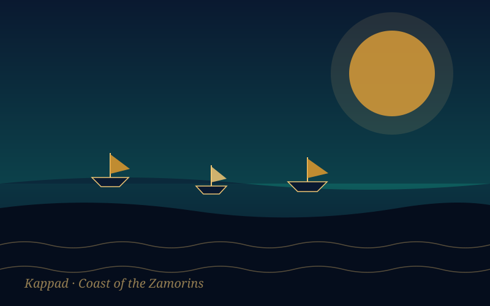
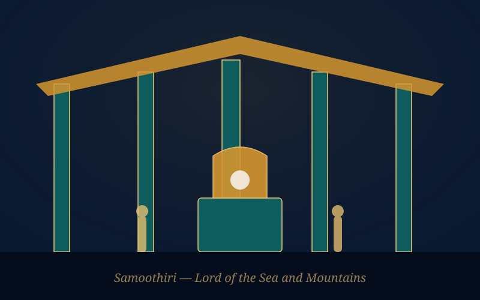
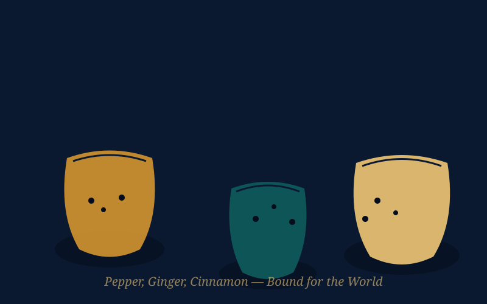
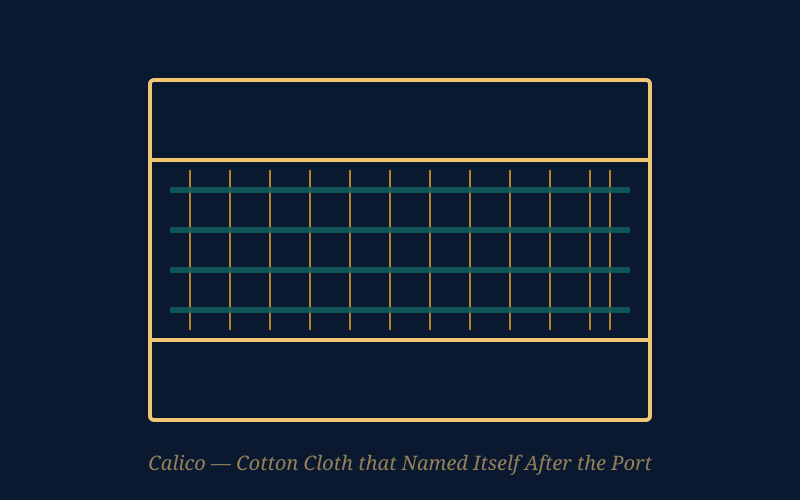

Kozhikode (Calicut) Ancient Port Explorer
Step into the "City of Spices," the free-trade emporium of the Zamorins where Arab, Chinese, Persian and European merchants once shared the same shore. Discover the port that gave the world calico cloth and drew Vasco da Gama across the ocean.
A Free Port on the Malabar Coast
Kozhikode, known to foreign traders for centuries as Calicut, sits on Kerala's Malabar Coast between the Arabian Sea and the Western Ghats. Arab merchants are recorded trading along this coast from around the 7th century CE, and by the 12th century the rising Zamorin dynasty of Nediyiruppu had made Kozhikode its capital and its chief outlet to the sea.
What set Kozhikode apart from other medieval ports was its reputation as an open emporium: the Zamorins welcomed traders of every faith and origin, and enforced order strictly enough that merchants moved their business here from older ports along the coast. By the 14th century, the city stood at the centre of the Indian Ocean spice trade, connecting the Malabar coast to Arabia, East Africa, Persia, and as far as China and Southeast Asia.
📜 At a Glance
- Location: Kozhikode district, Kerala, on the Malabar Coast.
- Also known as: Calicut to Arab, Chinese and European traders.
- Ruled by: The Zamorins (Samoothiris) of the Nediyiruppu Swaroopam.
- Golden age: 13th–16th century CE, as the leading spice port of the Indian Ocean.
Maritime Trade Significance
Kozhikode's warehouses moved the produce of the Malabar hills and looms out into the Indian Ocean, making it one of the most cosmopolitan trading cities of the medieval world.
The Spice Trade
Black pepper, ginger, cardamom and cinnamon grown in the Malabar hills passed through Kozhikode's harbour, earning it the title "City of Spices" and making it a magnet for Arab, Persian and later European buyers.
Calico Cotton Cloth
Fine hand-woven cotton exported from the port became known in Europe as "calico," an anglicised form of the city's name — a rare case of a global textile trade taking its name directly from an Indian port.
An Indian Ocean Crossroads
Arab and Persian dhows, Chinese junks, and later Portuguese, Dutch, French and English ships all called at Kozhikode, linking it to trade networks stretching from East Africa to the South China Sea.
👑 The Zamorins of Calicut
- Title: Samoothiri, popularly rendered "Zamorin" — traditionally understood as ruler of the sea and the land.
- Origin: The Nediyiruppu Swaroopam lineage, which rose to prominence from around the 12th–13th century CE.
- Policy: Guaranteed safety and free trade to merchants of every community, which drew Arab, Jewish, Chinese and later European traders to settle at the port.
Foreign Travellers at the Zamorin's Court
The Moroccan traveller Ibn Battuta visited Calicut in the early 1340s and described it as one of the great ports of the Malabar coast, crowded with ships and merchants from across the Indian Ocean world. He would later pass through again by sea on his journey back from China.
In the early 15th century, the Ming Chinese admiral Zheng He called at Calicut several times during his voyages between 1405 and 1433, exchanging silk and porcelain for pepper and spices. His interpreter Ma Huan recorded the Zamorin's court and the port's bustling trade in his travel account, describing Calicut as a great emporium of the Western Ocean.
Vasco da Gama and the Colonial Era
On 20 May 1498, the Portuguese navigator Vasco da Gama landed at Kappad, near Kozhikode, having sailed around Africa's Cape of Good Hope — opening the first direct sea route between Europe and India. The Zamorin received him, though local Arab merchants, wary of a rival, worked to limit Portuguese access to the pepper trade.
Conflict between the Zamorin and the Portuguese followed over the next decades, and a Portuguese fort and trading post operated at Kozhikode from 1511 until its fall in 1525. Later in the 17th and 18th centuries, English, French and Dutch companies each established their own trading posts along the Malabar coast, drawn by the same pepper and spice trade that had built the Zamorin's fortune.
⛵ A Turning Point
- 20 May 1498: Vasco da Gama lands at Kappad, opening a direct sea route from Europe to India.
- 1511–1525: A Portuguese factory and fort operate at Kozhikode before falling to the Zamorin's forces.
- 1615 onward: English, French and Dutch trading posts follow, each competing for the Malabar spice trade.
Chronology of Kozhikode Port
Tracing Kozhikode's rise from an early Malabar anchorage to the Zamorin's free-trade capital, and its transformation after 1498.
Early Arab Trade Contact
Arab merchants begin regularly trading along the Malabar coast, laying the foundation for Kozhikode's later rise as an international port.
Rise of the Zamorins
The Nediyiruppu Swaroopam establishes Kozhikode as its capital, and the ruler takes the title Samoothiri, or Zamorin.
Ibn Battuta's Visit
The Moroccan traveller Ibn Battuta visits Calicut and describes it as a major and prosperous port of the Malabar coast.
Zheng He's Voyages
The Ming Chinese admiral Zheng He calls at Calicut on several of his treasure-fleet voyages, exchanging goods with the Zamorin's court.
Vasco da Gama Lands at Kappad
The Portuguese navigator's arrival opens the first direct sea route between Europe and India, ending Arab and Venetian control of the spice route.
Portuguese Factory and Fall
A Portuguese trading factory and fort operate at Kozhikode until they fall to the Zamorin's forces in 1525.
English, French & Dutch Trading Posts
Rival European companies establish trading posts along the Malabar coast, competing for control of the pepper and spice trade.
The Shore, the Court & the Trade of Kozhikode
Illustrated impressions of the port's coastline, the Zamorin's court, and the spices and cloth that passed through it.




📚 References & Further Reading
- Ibn Battuta (trans. Gibb, H. A. R., 1929). Travels in Asia and Africa, 1325–1354. Routledge.
- Ma Huan (trans. Mills, J. V. G., 1970). Ying-yai Sheng-lan: The Overall Survey of the Ocean's Shores. Hakluyt Society, Cambridge University Press.
- Subrahmanyam, Sanjay (1997). The Career and Legend of Vasco da Gama. Cambridge University Press.
- Panikkar, K. M. (1929). Malabar and the Portuguese. Voice of India.
- Kozhikode District Administration. History of Kozhikode. Government of Kerala.